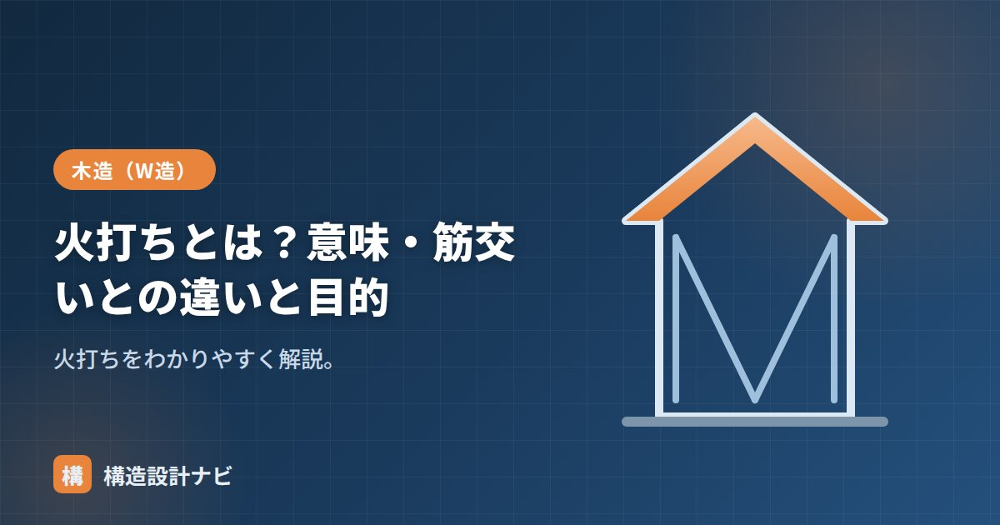

火打ちとは？意味・筋交いとの違いと目的

火打ち（ひうち）とは、床組・小屋組の隅（コーナー）に斜めに入れる補強材のことです。土台や梁が直角に交わる角に対して斜めに材を渡すことで、床や屋根といった水平な面が変形しにくくなり、水平構面としての剛性が高まります。木造の在来軸組工法では古くから使われてきた部材ですが、耐力壁の代表格である筋交いと混同されやすいため、両者の役割の違いを整理しておくことが大切です。
- 火打ちは床組・小屋組の隅角部に斜めに入れる水平構面の補強材
- 入れる位置が水平面（火打ち）か鉛直面（筋交い）かで役割が異なる
- 目的は水平構面の変形を防ぎ、水平力を耐力壁へ確実に伝えること
意味・読み方
火打ちは「ひうち」と読み、英語では diagonal brace（水平構面の斜め補強材）に近い意味で使われます。土台や梁が直角に交わる隅角部に斜めに渡す材で、平面上は三角形を作るように取り付けます。四角形は力が加わると平行四辺形に変形しやすい一方、三角形は形が崩れにくいため、隅に斜材を入れることで面全体の変形を抑えられるのが基本原理です。
火打ち土台と火打ち梁
火打ちは設置する場所によって呼び名が変わります。床組（1階床）に入れるものを火打ち土台、小屋組や2階床の梁組に入れるものを火打ち梁といいます。素材は木製のほか、近年は施工性・強度の安定した鋼製火打ち（火打ち金物）も広く使われています。木製火打ちは仕口を欠き込んで取り付けるため断面欠損が生じやすく、鋼製火打ちはボルトや専用金物で接合するため施工品質が安定しやすいという特徴があります。
筋交いとの違い
| 火打ち | 筋交い | |
|---|---|---|
| 入れる面 | 水平面（床・小屋） | 鉛直面（壁） |
| 目的 | 水平構面を固める | 耐力壁として水平力に抵抗 |
| 位置 | 隅角部 | 柱・柱の間 |
どちらも「斜材で四角形の変形（平行四辺形化）を防ぐ」点は共通していますが、火打ちは水平面、筋交いは壁（鉛直面）に入れる点が異なります。筋交いが耐力壁として地震・風の水平力そのものに抵抗する部材であるのに対し、火打ちは床や屋根の面を固めて、その水平力を耐力壁までスムーズに伝達する役割を担う点も大きな違いです。
目的（なぜ必要か）
火打ちの目的は、床・屋根の水平構面が平行四辺形に変形するのを防ぎ、地震・風による水平力を耐力壁に確実に伝えることです。床や屋根の面がねじれるように変形してしまうと、せっかく耐力壁を適切に配置しても、そこまで力が伝わらず耐震性能を十分に発揮できません。特に吹き抜けまわりや大きな開口部の近くなど、水平剛性が不足しやすい部分では、火打ちの配置が構造上重要になります。
実務での扱い・注意点
近年の在来軸組工法では、床下地に構造用合板を釘打ちで留め付けて水平構面を固める工法が普及しており、この場合は火打ちを省略できることがあります。ただし、合板で水平構面を固める場合でも、釘のピッチや合板厚さなど所定の仕様を満たす必要があり、単に合板を張っただけで火打ち省略の要件を満たすとは限りません。
火打ちを省略する場合は、床組・小屋組の仕様が構造用合板張りの規定を満たしているかを必ず確認してください。仕様を満たさないまま省略すると、水平構面の剛性不足につながるおそれがあります。
Q1. 火打ちはすべての建物で必要ですか。
必須ではありません。木製火打ちの代わりに構造用合板で水平構面を固める仕様であれば、省略できる場合があります。ただし所定の釘仕様などを満たすことが前提です。
Q2. 火打ち金物と木製火打ちはどちらが優れていますか。
どちらが優れているというより適材適所です。鋼製火打ちは施工が安定しやすく、木製火打ちはコストを抑えやすいという特徴があり、設計条件や施工者の慣れに応じて選ばれます。
火打ちを省略して構造用合板で水平構面を固める現場では、釘のピッチと合板の張り方向を実測で確認している。図面通りの仕様でも、施工段階で釘が減っていたり目地位置がずれていたりすることがあるためだ。
火打ちはどこに入れるか（図解）
現在の実務での位置づけ
| 時代・工法 | 水平構面のつくり方 | 火打ちの役割 |
|---|---|---|
| 従来の根太工法（〜2000年代） | 根太＋薄い床板（12mm程度） | 主役。火打ちがないと面が成立しない |
| 根太レス工法（現在の主流） | 厚合板24〜28mmを直接梁に留める | 補助。合板だけで床倍率3.0が確保できる |
| 小屋組（現在も） | 勾配屋根で床面がつくれない | 今も重要。小屋梁の隅に火打ち梁が必要 |
| 吹き抜けまわり | 床が分断される | 重要。周囲の梁を固める |
| 耐震改修 | 既存の床を壊さず補強したい | 有効。床下・小屋裏から後付けできる |
新築の1階・2階床では、厚合板の剛床化によって火打ちが省略されるケースが増えました。ただし小屋組・吹き抜けまわり・改修では今も欠かせません。「もう不要な部材」ではなく、「床面がつくれない場所で使う部材」と理解するのが正確です。
施工と設計の注意点
| 注意点 | 内容 |
|---|---|
| 負担面積を守る | 床倍率0.8を確保するには、火打ち1本あたりの平均負担面積2.5m²以下・梁せい240mm以上が必要 |
| 梁せいが効く | 同じ火打ちでも、取り付く梁が細いと床倍率は下がる（せい150で0.3、せい240で0.8） |
| ボルト・金物を確実に | 火打ちは引張・圧縮を受けるため、接合部が緩いとまったく効かない |
| 設備との干渉 | 小屋裏のダクト・配線と当たりやすい。位置を事前に調整する |
| 天井高さへの影響 | 火打ち梁は天井内に出るため、勾配天井や高天井では納まりの検討が必要 |
| 金物火打ちの選択 | 木製より薄く納まり、施工も速い。認定品の性能値を確認して使う |
火打ちの効果は、四角形の隅を三角形に固めることで生まれます。したがってできるだけ隅の近くに、45度に近い角度で入れるのが原則です。設備との干渉を避けようとして隅から離れた位置にずらすと、三角形が小さくなり、期待した効果が得られません。
また、火打ちが取り付く梁が細いと、火打ちからの力で梁自体が曲がってしまい、やはり効果が落ちます。床倍率の算定表で梁せいごとに数値が分かれているのはこのためです。火打ちの性能は「火打ち材そのもの」ではなく「取り付く梁を含めた仕組み全体」で決まると考えてください。
まとめ
- 火打ちは床組・小屋組の隅に斜めに入れる材（火打ち土台・火打ち梁）。
- 筋交いは壁（鉛直面）、火打ちは水平面に入れる点が違う。
- 水平構面の変形を防ぎ、水平力を耐力壁に伝えるのが目的。
- 構造用合板で水平構面を固める場合は、所定仕様を満たせば省略できることもある。